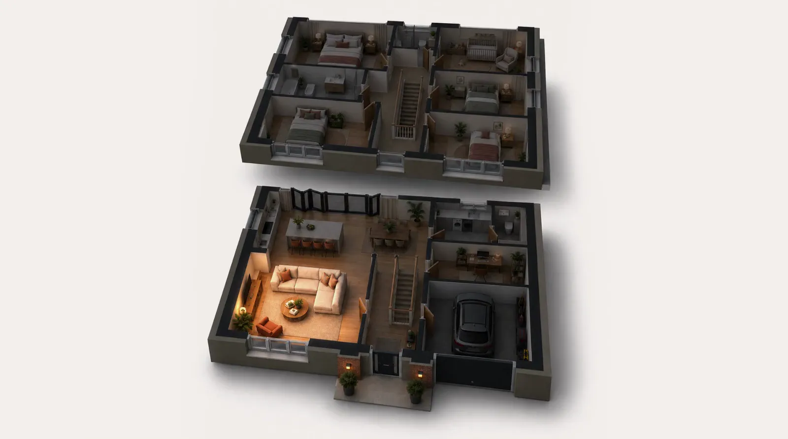
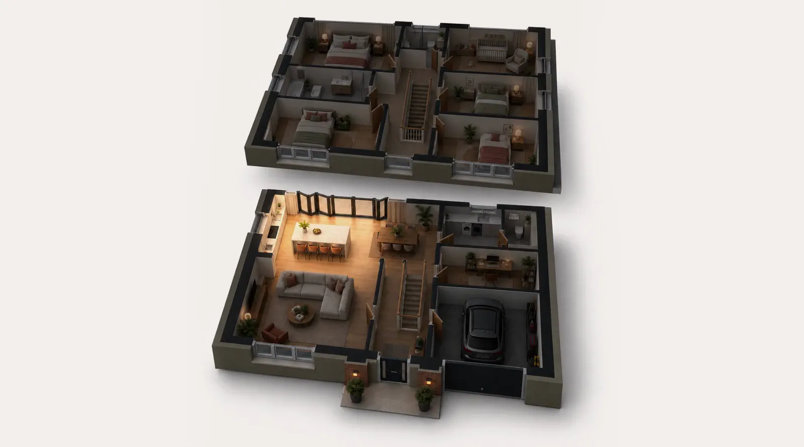
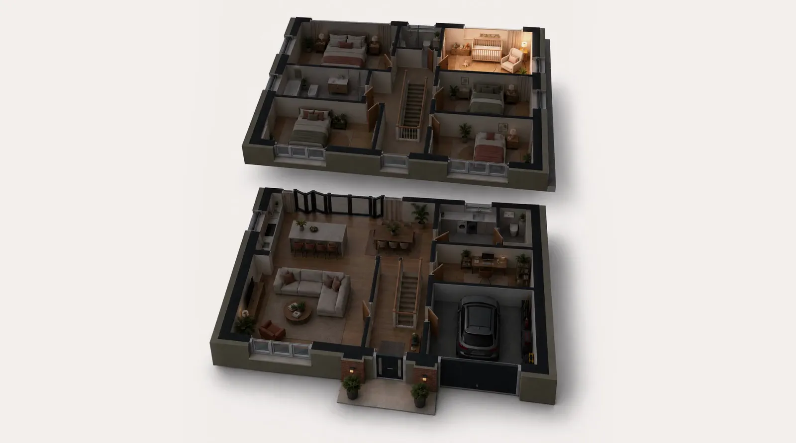
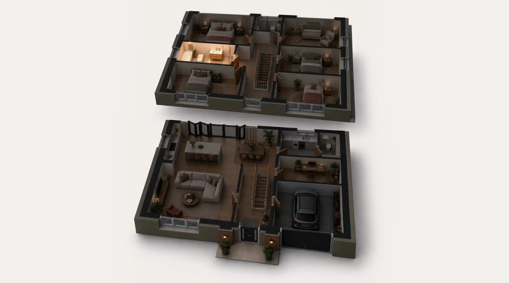
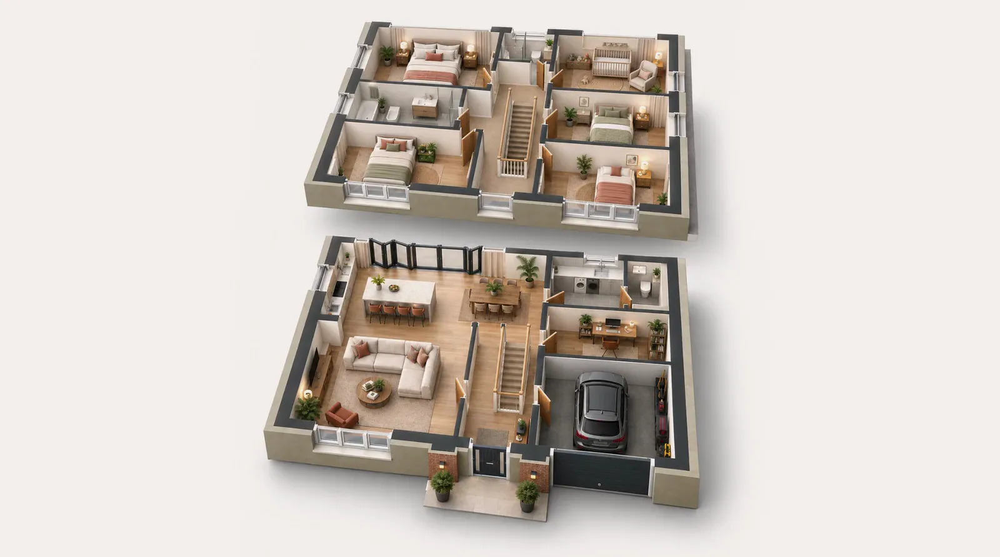

Live-in postpartum care,
for you and your baby.
Because mum needs looking after too.
Rooted in Malaysian confinement traditions, our certified specialists provide dedicated in-home care for mother and baby for 5 to 30 days.
Book a consultation
They say rest and recover.
We make it possible.





Around the house
While you rest, the rooms you live in are looked after.
- She will tidy your living room.
- She will clean your kitchen.
- She will keep your nursery ready.
- She will clean your bathroom.
Four kinds of care. One person in your home.
- CookingNourishing meals made fresh in your kitchen.
- The houseLaundry, ironing and the everyday jobs.
- Your babyFeeds, settling, changes and nights.
- YouPostpartum treatments that help you recover.
Choose how long we stay, or book a single treatment.